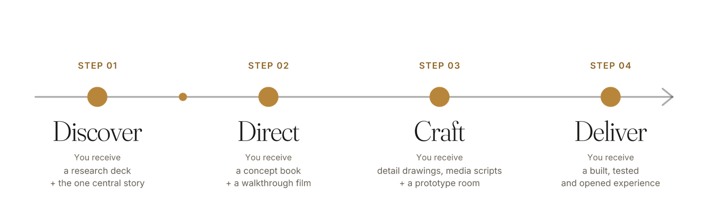

Brand strategy.
Vision, mission and purpose; five values; the archetype. Everything marked Confirmed is taken from sanzeed.com; everything else is the agency’s recommendation, accepted for this version.
- 2.1Vision · mission · purpose
- 2.2Values and personality
- 2.3Archetype, audience and promise
Three statements, one through-line.
From 01_BRAND_STRATEGY/Brand_Strategy.md §2. Use them verbatim; do not paraphrase the mission or the purpose.
Compresses “impossible to forget once you have walked through it” (confirmed).
To lead the whole room — story, space, graphics, media and the team that builds it — so that institutions and brands open experiences that are calm to run and impossible to forget.
“Because the most powerful stories aren’t just told — they’re felt, lived and remembered through the spaces we design and the moments we shape.”

Five values, five traits.
Each value is anchored in confirmed copy from the site. The five traits are a checklist for every piece: if one is missing, the piece is not finished.
- Story first. “The script comes first. Every room, screen and surface carries a line of it.”
- The route, not the floor plan. Experiences are sequenced for a human walking through them, in order, with dwell time.
- Whole-room responsibility. “All seven, every time. Every room needs the whole list, held in one hand.”
- Calm leadership. Designers, writers, architects, producers and technologists “moved toward one outcome, calmly.”
- Built, tested, opened. “On scale, on story, on time.” Ambition is only real once the doors open.
| Trait | What it looks like | What it never looks like |
|---|---|---|
| Calm | Space, one accent colour, short sentences | Shouting, gradients everywhere, exclamation marks |
| Precise | Numbered steps, named deliverables, 001 counters, wall-label captions | Vague adjectives (“innovative”, “cutting-edge”) |
| Monumental | Large light serif headlines, a single object on a dark field | Clutter, many small things competing |
| Warm | Gold light, first person, “the first conversation is always free” | Corporate distance, “we at our firm” |
| Curious | “Every environment begins as a question” | Pre-packaged solutions |
A maker who thinks before building.
Archetype and promise from Brand_Strategy.md §5–8; audience segments are a recommendation to be confirmed by Sanzeed.
The Creator, tempered by The Sage. The Creator makes things of enduring value; the Sage brings calm, research and judgement. Together: a maker who thinks before building and stays composed while building at monumental scale.
Not The Magician: the brand does not sell spectacle; it sells spectacle held in a steady hand.
Supported by three confirmed commitments: the first conversation is free · a reply within two working days · a named deliverable at every step of the method.
The whole room in one hand. A single consultant who has personally done every layer — concept art, VFX, animation, museum narrative, spatial design, show direction, team leadership — and therefore holds the entire experience together without hand-offs.
| Segment | Who | What they need | Proof they look for |
|---|---|---|---|
| Institutional commissioners | Ministries, museum authorities, cultural trusts, state tourism boards | A creative lead trusted with national-scale, politically visible projects | Prime Minister Museum, Yuge Yugeen Bharat, Ram Katha Show; the method |
| Corporate experience owners | Brands building experience centres, pavilions, boardrooms, launches | “Brands you can stand inside” | Experience-centre gallery; Digital ↔ Physical integration |
| Delivery partners | Architects, fabricators, AV and projection integrators, event agencies | A creative director who leads the narrative and media design | Cross-functional leadership; projection shows |
| Former-employer ecosystem | Studios needing a senior independent director | Availability for select consulting and creative-direction mandates | Timeline, seven services |
